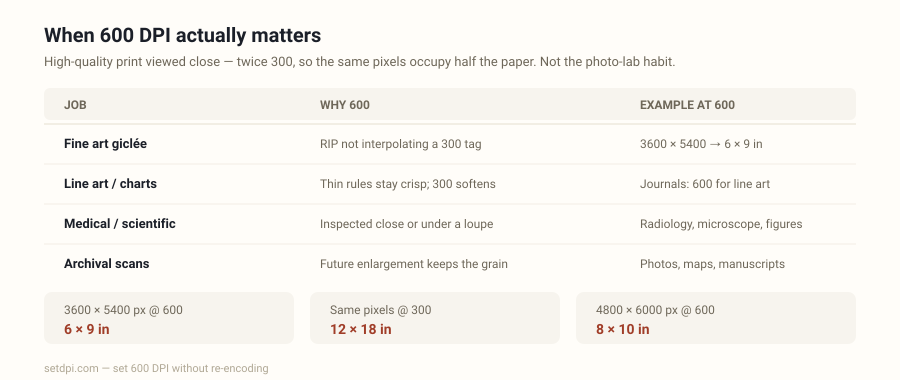

Convert Image to 600 DPI
Drop a JPG or PNG — the density tag is rewritten to 600 DPI in your browser. Pixels stay exactly the same. Nothing is uploaded.

How to convert an image to 600 DPI in the browser
Drop a JPG or PNG into the tool above. The current density tag is shown on each row. The target is already set to 600 — the value fine-art giclée printers, medical and scientific imaging, archival scanners, and high-end photo books often ask for. Click Download. The file that lands in your downloads folder has rewritten JFIF/EXIF (JPEG) or pHYs (PNG) density, and the same pixel bytes it started with.
That last part is the whole product. Converting an image to 600 DPI on this site does not resample, does not recompress, and does not upload. A 4.2 MB camera JPEG is still a 4.2 MB camera JPEG. Tools that “convert DPI” by opening the picture and saving it again quietly degrade JPEG quality; there is no reason to pay that cost for a metadata edit.
If 600 is not the number on the brief, use a preset or the custom box. The homepage Image DPI Changer is the same engine with a 300 default; this page exists so the search phrase “convert image to 600 dpi” lands on copy that talks about that specific job. Everyday photo-quality work still belongs on Convert Image to 300 DPI.
When you need 600 DPI
600 is not the everyday photo-lab habit. It is the density a smaller set of high-quality print and technical capture workflows actually specify — twice the samples per inch of 300, which means the same pixels occupy half the paper. Four jobs show up over and over:
Fine art giclée prints. Pigment inkjet on cotton rag or baryta can hold more than a 150-line magazine screen. Printmakers and galleries often ask for 600 DPI files so the RIP is not interpolating a 300 tag up to the printer’s native resolution. A 3600 × 5400 px file tagged 72 claims a 50-inch poster; tagged 600 it claims 6 × 9 in, which is a real small-edition print size. Preflight that checks the integer wants to see 600, not 72 and not 300.
Medical and scientific imaging. Radiology exports, microscope captures, and journal line-art figures are frequently specified at 600 DPI because thin rules, ticks, and annotations fall apart at 300. Author guidelines still write “300 for photos, 600 for line art.” A chart tagged 72 will fail that portal even when the pixel count is generous. Rewriting 600 is the correction; it will not invent the samples a 600 DPI scan would have captured.
Archival scanning. Libraries and museums scan photographs, maps, and manuscripts at 600 DPI (sometimes 400 or 800) so a future enlargement still has the original grain. If the scanner wrote 72, or a downstream export stripped the tag, setting 600 here restores the capture record. It does not turn a 200 DPI scan into a 600 DPI scan.
High-end photo books. A few art-book and exhibition-catalogue printers specify 600 for plates that will be viewed close, especially on coated stock. Most trade photo books still want 300. Use 600 when that is the number on the print spec, not because a higher integer is automatically better.
If you are not sure what the file currently claims, check it on the DPI Checker first. If the brief actually said 300, use the 300 DPI page. For the vocabulary gap between DPI and PPI, read DPI vs PPI. The lossless changer itself also lives on the homepage.
600 vs 300 DPI
Same pixels, different claimed inches. That is the entire difference. A 3600 × 5400 px file tagged 600 prints 6 × 9 in; tagged 300 it prints 12 × 18 in. Neither tag adds detail. The one you pick is the one the downstream system asked to see.
| 600 DPI | 300 DPI | |
|---|---|---|
| Typical job | Fine art giclée, medical/scientific, archival scans, high-end photo books | Photo labs, journals (photos), IDs, KDP, Etsy printables |
| 3600 × 5400 px prints | 6.0 × 9.0 in | 12.0 × 18.0 in |
| 2400 × 3000 px prints | 4.0 × 5.0 in | 8.0 × 10.0 in |
| On screen | Identical — monitors ignore the tag | Identical — monitors ignore the tag |
| Photo-quality paper at arm’s length | Denser than most eyes need | The industry habit |
| Line art / hairline charts | The usual spec | Soft edges on thin rules |
Use 600 when that is the number on the giclée RIP, the journal line-art guideline, the scanner spec, or the art-book plate. Use 300 when a lab, a marketplace checklist, or a photo-book printer will bounce anything else. If nobody wrote a number and you are printing a photograph, start at 300 — that page is Convert Image to 300 DPI. This page is for the jobs that actually want 600.
Changing the 600 DPI tag vs resampling the pixels
Those two operations are constantly sold as the same thing. They are not.
Metadata rewrite (this tool): the JPEG or PNG keeps every pixel sample. Only the density instruction changes. File size stays essentially identical. Quality is identical because the decoder never runs. Print size shrinks as DPI goes up, because the same pixels are asked to sit closer together.
Resampling (Photoshop Image Size with Resample on, most “enhance” websites): the software creates a new pixel grid. Going from 72 to 600 “the resample way” on a 72 DPI 6 × 9 in image tries to manufacture about 8× the pixels on each side. That is a new picture. It can look acceptable or it can look smeared; either way it is lossy, and for JPEG it is a second generation of compression on top.
Use the rewrite when the pixels already cover the print. Use a resample or an AI enlarger only when they do not. A quick test: divide width in pixels by 600. If the inches you get are at least the inches you will print, rewrite the tag and stop. If they are not, no DPI converter will save the job.
| Pixel size | Print @ 72 DPI | Print @ 600 DPI | Typical fit at 600 |
|---|---|---|---|
| 1200 × 1800 | 16.7 × 25.0 in | 2.0 × 3.0 in | Wallet / small plate |
| 2400 × 3000 | 33.3 × 41.7 in | 4.0 × 5.0 in | Small giclée / 4×5 |
| 3600 × 5400 | 50.0 × 75.0 in | 6.0 × 9.0 in | Fine-art print |
| 4800 × 6000 | 66.7 × 83.3 in | 8.0 × 10.0 in | Framed photo at 600 |
| 5100 × 6600 | 70.8 × 91.7 in | 8.5 × 11.0 in | US Letter at 600 |
| 4962 × 7014 | 68.9 × 97.4 in | A4 | Archival page |
Formula again, because it is the only formula that matters: print inches = pixels ÷ DPI, and the centimetre column is inches × 2.54. The tool above computes it live for whatever target you have selected.